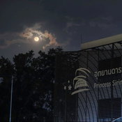

.png)
ที่ตั้ง โรงเรียนวิทยาศาสตร์จุฬาภรณราชวิทยาลัย พิษณุโลก รหัสโรงเรียน 1065360468 ตั้งอยู่เลขที่ 86 หมู่ที่ 4 ตำบลมะขามสูง อำเภอเมือง จังหวัดพิษณุโลก 65000 โทรศัพท์ 055-245-115 โทรสาร 055-245-115 อีเมล : pccpl@pccpl.ac.th เว็บไซต์ www.pccpl.ac.th มีพื้นที่ 83 ไร่ 3 งาน 81 ตารางวา เปิดสอนระดับชั้นมัธยมศึกษาปีที่ 1 – 6 เป็นลักษณะโรงเรียนอยู่ประจำทั้งหมด โดยรับนักเรียนจากจังหวัดในเขตพื้นที่บริการ ได้แก่ จังหวัดพิษณุโลก นครสวรรค์ พิจิตร กำแพงเพชร สุโขทัย เพชรบูรณ์ ตาก และอุตรดิตถ์ ประวัติโรงเรียน โรงเรียนวิทยาศาสตร์จุฬาภรณราชวิทยาลัย พิษณุโลก เดิมชื่อ โรงเรียนจุฬาภรณราชวิทยาลัย พิษณุโลก เป็นโรงเรียนที่ก่อตั้งขึ้นตามโครงการโรงเรียนพระราชดำริและเฉลิมพระเกียรติสมเด็จพระเจ้าลูกเธอเจ้าฟ้า จุฬาภรณวลัยลักษณ์ อัครราชกุมารี ในวโรกาสที่ทรงเจริญพระชนมายุครบ 36 พรรษา เมื่อวันที่ 4 กรกฎาคม 2536 ได้รับการประกาศจัดตั้งจากกรมสามัญศึกษาเมื่อวันที่ 3 กุมภาพันธ์ 2538 มีนายสมพร ขุนลึก รักษาการในตำแหน่งครูใหญ่ วันที่ 17 มกราคม 2539 สมเด็จพระเจ้าลูกเธอเจ้าฟ้าจุฬาภรณวลัยลักษณ์ อัครราชกุมารี ได้ทรงพระสุหร่ายเจิมแผ่นศิลาฤกษ์พระราชทานให้แก่โรงเรียนเพื่อประกอบพิธีวางศิลาฤกษ์ในวันที่ 19 มกราคม 2539 ณ ที่ตั้งในปัจจุบัน โรงเรียนมีการจัดการศึกษาแบบสหศึกษาในระดับมัธยมศึกษาตอนต้นและตอนปลาย เน้นด้านวิทยาศาสตร์ คณิตศาสตร์ ภาษาอังกฤษ เทคโนโลยีและสิ่งแวดล้อม เปิดรับนักเรียนในเขตจังหวัดพิษณุโลก นครสวรรค์ พิจิตร สุโขทัย เพชรบูรณ์ อุตรดิตถ์ กำแพงเพชร และตาก ปีการศึกษา 2539 เปิดรับนักเรียนรุ่นแรกเข้าศึกษาต่อในระดับชั้นมัธยมศึกษาปีที่ 1 และชั้นมัธยมศึกษาปีที่ 4 โดยใช้อาคารของสำนักงานการประถมศึกษาจังหวัดพิษณุโลกเป็นสถานที่เรียนชั่วคราว เนื่องจากสถานที่ตั้งในปัจจุบันอยู่ระหว่างการก่อสร้าง และได้ย้ายมายังสถานที่ตั้งปัจจุบัน ในปีการศึกษา 2540 โดยกรมสามัญศึกษาได้มีคำสั่งแต่งตั้งให้ นายสมพร ขุนพิลึก เป็นอาจารย์ใหญ่ ในปีการศึกษา 2553 คณะรัฐมนตรีได้อนุมัติให้โรงเรียนจุฬาภรณราชวิทยาลัย เป็นโรงเรียนวิทยาศาสตร์ภูมิภาค (สำนักงานรัฐมนตรี 406/2553 มติ ครม. 25 พฤศจิกายน 2553) โดยเริ่มรับนักเรียนตามโครงการโรงเรียนวิทยาศาสตร์ภูมิภาคในปีการศึกษา 2554 และเมื่อวันที่ 6 สิงหาคม 2561ตามประกาศของกระทรวงศึกษาธิการ โรงเรียนจุฬาภรณราชวิทยาลัย ทั้ง 12 แห่ง ได้รับพระราชทานพระอนุญาตจากสมเด็จพระเจ้าลูกเธอ เจ้าฟ้าจุฬาภรณวลัยลักษณ์ อัครราชกุมารี ให้เปลี่ยนชื่อ “โรงเรียนจุฬาภรณราชวิทยาลัย” เป็นชื่อ “โรงเรียนวิทยาศาสตร์จุฬาภรณราชวิทยาลัย” ต่อท้ายด้วยชื่อจังหวัดที่เป็นสถานที่ตั้งของโรงเรียน ดังนั้นจึงเปลี่ยนชื่อเป็น “โรงเรียนวิทยาศาสตร์จุฬาภรณราชวิทยาลัย พิษณุโลก” ปัจจุบัน นายสุริยา จันทิมา เป็นผู้อำนวยการโรงเรียน
การบริหารจัดการแนวทางการจัดการศึกษา ปรัชญาโรงเรียน “ปัญญายัตถัง วิปัสสะติ”(คนย่อมเห็นเนื้อความด้วยปัญญา) หมายถึง ปัญญาเกิดขึ้นด้วยเหตุ 3 ประการ สุตมยปัญญา : ปัญญาสำเร็จได้ด้วยการฟัง จินตมยปัญญา : ปัญญาสำเร็จได้ด้วยการนึกคิด ภาวนามยปัญญา : ปัญญาสำเร็จได้ด้วยการฝึก คติพจน์ คุณธรรมนำวิชาการ คำขวัญโรงเรียน รักษ์ศักดิ์ศรี มีคุณธรรม นำวิชาการ สืบสานงานพระราชดำริ นามเรียกขาน จุฬาลักษณ์ สีประจำโรงเรียน น้ำเงิน - แสด สีน้ำเงิน หมายถึง สถาบันพระมหากษัตริย์ สีแสด หมายถึง สีประจำวันประสูติของสมเด็จพระเจ้าน้องนางเธอ เจ้าฟ้าจุฬาภรณวลัยลักษณ์ อัครราชกุมารีกรมพระศรีสวางควัฒน วรขัตติยราชนารี คือ วันพฤหัสบดี วิสัยทัศน์ (Vision) ภายในปี พ.ศ.2567 โรงเรียนวิทยาศาสตร์จุฬาภรณราชวิทยาลัย พิษณุโลก เป็นโรงเรียนที่พัฒนานักเรียนให้มีจิตใจ บุคลิกลักษณะอันพึงประสงค์ และมีคุณภาพการศึกษาอยู่ในระดับเดียวกับโรงเรียนวิทยาศาสตร์ชั้นนำของนานาชาติ พันธกิจ (Mission) ด้านจิตใจ และบุคลิกลักษณะอันพึงประสงค์ 1. ปลูกฝังให้นักเรียนเห็นคุณค่าของตนเอง มีวินัยในตนเอง ปฏิบัติตามหลักธรรมของพระพุทธศาสนาหรือศาสนาที่ตนนับถือ มีคุณธรรมจริยธรรม มีบุคลิกภาพที่ดีและมีความเป็นผู้นำ 2. ส่งเสริมการจัดกิจกรรมรักการเรียนรู้ การอ่าน การเขียน การค้นคว้า อย่างเป็นระบบ มีความรอบรู้ และบูรณาการความรู้ได้ 3. สร้างจิตสำนึกในเกียรติภูมิของความเป็นไทย มีความเข้าใจและภูมิใจในประวัติศาสตร์ของชาติ มีความรักและความภูมิใจในชาติบ้านเมืองและท้องถิ่น เป็นพลเมืองดียึดมั่นในการปกครองระบอบประชาธิปไตยอันมีพระมหากษัตริย์เป็นประมุข 4. สร้างจิตสำนึกในการอนุรักษ์ภาษาไทย ศิลปวัฒนธรรมไทย ประเพณี และภูมิปัญญาไทย ตลอดจนอนุรักษ์ทรัพยากรธรรมชาติและสิ่งแวดล้อม มีเจตคติที่ดีต่อเพื่อนร่วมโลกและธรรมชาติ 5. ปลูกฝังให้นักเรียนมีจิตมุ่งที่จะทำประโยชน์และสร้างสิ่งที่ดีงามให้กับสังคม มีความรับผิดชอบต่อสังคม ต้องการตอบแทนบ้านเมืองตามความสามารถของตนอย่างต่อเนื่อง 6. ส่งเสริมให้นักเรียนมีสุขภาพอนามัยที่ดี รักการออกกำลังกาย รู้จักดูแลตนเองให้เข้มแข็งทั้งกายและใจ ด้านคุณภาพการศึกษาอยู่ในระดับเดียวกับโรงเรียนวิทยาศาสตร์ชั้นนำของนานาชาติ 7. จัดหลักสูตรและการจัดการเรียนรู้ด้านคณิตศาสตร์และวิทยาศาสตร์อย่างลึกซึ้งในระดับเดียวกันกับนักเรียนของโรงเรียนวิทยาศาสตร์ชั้นนำของนานาชาติ 8. จัดการเรียนการสอนที่เน้นกระบวนการคิดวิเคราะห์ สังเคราะห์ คิดริเริ่มสร้างสรรค์ มีจิตวิญญาณของความเป็นนักวิจัย นักประดิษฐ์ นักคิดค้นและนักพัฒนานวัตกรรมด้านคณิตศาสตร์ วิทยาศาสตร์และ เทคโนโลยีในระดับเดียวกับนักเรียนของโรงเรียนวิทยาศาสตร์ชั้นนำของนานาชาติ 9. จัดกระบวนการเรียนรู้ให้มีความรู้และทักษะการใช้ภาษาต่างประเทศและเทคโนโลยีสารสนเทศได้อย่าง มีประสิทธิภาพในระดับเดียวกันกับนักเรียนของโรงเรียนวิทยาศาสตร์ชั้นนำของนานาชาติ 10. พัฒนาครูและบุคลากรทางการศึกษาในการจัดการศึกษาสำหรับนักเรียนที่มีความสามารถพิเศษ ด้านคณิตศาสตร์ วิทยาศาสตร์ และเทคโนโลยี 11. พัฒนาระบบสนับสนุน การบริหารจัดการและภาคีเครือข่าย เป้าประสงค์ (Goals) 1. เพื่อให้นักเรียนเห็นคุณค่าของตนเอง มีวินัยในตนเอง ปฏิบัติตามหลักธรรมของพระพุทธศาสนาหรือ ศาสนาที่ตนนับถือ มีคุณธรรมจริยธรรม มีบุคลิกภาพที่ดีและมีความเป็นผู้นำ 2. เพื่อให้นักเรียนรักการเรียนรู้ การอ่าน การเขียน การค้นคว้า อย่างเป็นระบบ มีความรอบรู้และบูรณาการความรู้ได้ 3. เพื่อให้นักเรียนมีจิตสำนึกในเกียรติภูมิของความเป็นไทย มีความเข้าใจและภูมิใจในประวัติศาสตร์ของชาติ มีความรักและความภูมิใจในชาติบ้านเมืองและท้องถิ่น เป็นพลเมืองดียึดมั่นในการปกครองระบอบประชาธิปไตยอันมีพระมหากษัตริย์เป็นประมุข 4. เพื่อให้นักเรียนมีจิตสำนึกในการอนุรักษ์ภาษาไทย ศิลปวัฒนธรรมไทย ประเพณี และภูมิปัญญาไทย ตลอดจนอนุรักษ์ทรัพยากรธรรมชาติและสิ่งแวดล้อม มีเจตคติที่ดีต่อเพื่อนร่วมโลกและธรรมชาติ 5. เพื่อให้นักเรียนมีจิตมุ่งที่จะทำประโยชน์และสร้างสิ่งที่ดีงามให้กับสังคม มีความรับผิดชอบต่อสังคมต้องการตอบแทนบ้านเมืองตามความสามารถของตนอย่างต่อเนื่อง 6. เพื่อให้นักเรียนมีสุขภาพอนามัยที่ดี รักการออกกำลังกาย รู้จักดูแลตนเองให้เข้มแข็งทั้งกาย และใจ 7. เพื่อให้มีหลักสูตรและการจัดการเรียนรู้ด้านคณิตศาสตร์และวิทยาศาสตร์อย่างลึกซึ้งในระดับเดียวกัน กับนักเรียนของโรงเรียนวิทยาศาสตร์ชั้นนำของนานาชาติ 8. เพื่อให้มีการจัดการเรียนการสอนที่เน้นกระบวนการคิดวิเคราะห์ สังเคราะห์ คิดริเริ่มสร้างสรรค์ มีจิตวิญญาณของความเป็นนักวิจัย นักประดิษฐ์ นักคิดค้นและนักพัฒนานวัตกรรมด้านคณิตศาสตร์ วิทยาศาสตร์และเทคโนโลยีในระดับเดียวกับนักเรียนของโรงเรียนวิทยาศาสตร์ชั้นนำของนานาชาติ 9. เพื่อให้มีการจัดกระบวนการเรียนรู้ให้มีความรู้และทักษะการใช้ภาษาต่างประเทศและเทคโนโลยีสารสนเทศได้อย่างมีประสิทธิภาพในระดับเดียวกันกับนักเรียนของโรงเรียนวิทยาศาสตร์ชั้นนำของนานาชาติ 10. เพื่อพัฒนาครูและบุคลากรทางการศึกษาในการจัดการศึกษาสำหรับนักเรียนที่มีความสามารถพิเศษด้านคณิตศาสตร์ วิทยาศาสตร์ และเทคโนโลยี 11. เพื่อพัฒนาระบบสนับสนุน การบริหารจัดการและภาคีเครือข่าย ค่านิยมองค์กร PCSHSP P : Professionality มืออาชีพ C : Collaboration ประสานความร่วมมือ S : Smart ความสง่างาม/ทันสมัย H : Head Hand Health Heart บูรณาการสติปัญญา นำพาปฏิบัติ สมรรถนะแข็งแรง มีแรงบันดาลใจ S : Sharing เอื้ออาทรแบ่งปัน P : Phitsanulok พิษณุโลก อัตลักษณ์ (Identity) นักวิจัย นักประดิษฐ์ และมีภาวะผู้นำ เอกลักษณ์ (Uniqueness) แหล่งเรียนรู้ด้านวิทยาศาสตร์และเทคโนโลยี เพื่อพัฒนาผู้เรียนและบริการชุมชน (ตามวิถีปรัชญาของเศรษฐกิจพอเพียง) ความหมาย โรงเรียนให้การบริการแหล่งเรียนรู้ด้านวิทยาศาสตร์และเทคโนโลยี สำหรับผู้เรียนในเขตพื้นที่บริการและชุมชน ตามวิถีปรัชญาของเศรษฐกิจพอเพียง
โรงเรียนวิทยาศาสตร์จุฬาภรณราชวิทยาลัย พิษณุโลก อยู่ในเขตองค์การบริหารส่วนมะขามสูง อำเภอเมือง จังหวัดพิษณุโลก ห่างจากตัวจังหวัดประมาณ 15 กิโลเมตร โรงเรียนอยู่ใกล้ถนนหลักการคมนาคมจึงสะดวก และมีสถานที่ราชการอยู่ใกล้บริเวณโรงเรียน เช่น ศูนย์อนามัยเขต 2 พิษณุโลก สถาบันพัฒนาฝีมือแรงงานพิษณุโลก ตำรวจภูธรภาค 6 ป.ป.ส.ภาค 6 พิษณุโลก ป.ป.ช.พิษณุโลก อบต.มะขามสูง ศูนย์บริการวิชาการที่ 10 (พิษณุโลก) กระทรวงพลังงาน ประชากรรอบ ๆ บริเวณโรงเรียนส่วนใหญ่ประกอบอาชีพรับจ้างและเกษตรกรรม
องค์การอนามัยโลก (WHO) เตือนว่า เชื้อไวรัสโควิด-19 สายพันธุ์โอมิครอนจะไม่ใช่สายพันธุ์สุดท้ายในการแพร่ระบาดครั้งนี้ แม้ว่าการแพร่ระบาดของสายพันธุ์โอมิครอนในบางประเทศจะเริ่มลดลงแล้วก็ตาม พร้อมเตือนว่าจำนวนผู้ติดเชื้อทั่วโลกที่อยู่ในระดับสูงมีแนวโน้มจะนำไปสู่การกลายพันธุ์เป็นไวรัสโควิด-19 สายพันธุ์ใหม่ แพทย์หญิงมาเรีย แวน เคอร์คอฟ หัวหน้าด้านเทคนิคของ WHO กล่าวว่า “เรากำลังได้ยินผู้คนจำนวนมากพูดว่า โอมิครอนจะเป็นไวรัสโควิด-19 สายพันธุ์สุดท้าย และทุกอย่างจะจบลงหลังจากนี้ ซึ่งนั่นไม่จริง เพราะไวรัสนี้กำลังแพร่ระบาดอย่างรุนแรงทั่วโลก” สำนักข่าวซีเอ็นบีซี รายงานว่า จำนวนผู้ติดเชื้อใหม่เพิ่มขึ้น 20% ทั่วโลกเมื่อสัปดาห์ที่ผ่านมา โดยมีจำนวนผู้ติดเชื้อรวมเกือบ 19 ล้านราย แต่แพทย์หญิงแวน เคอร์คอฟ ระบุว่า จำนวนผู้ติดเชื้อใหม่ที่ไม่ได้รายงานอาจทำให้จำนวนตัวเลขจริงสูงกว่านี้มาก ในขณะที่ ดร.บรูซ ไอล์วาร์ด เจ้าหน้าที่อาวุโสของ WHO เตือนว่า การแพร่ระบาดในระดับสูงทำให้ไวรัสมีโอกาสมากขึ้นที่จะแบ่งตัวและกลายพันธุ์ ซึ่งเพิ่มความเสี่ยงที่จะเกิดไวรัสสายพันธุ์ใหม่ “เรายังไม่เข้าใจอย่างแท้จริงถึงผลที่ตามมาของการปล่อยให้สิ่งนี้ดำเนินต่อไป” ดร.ไอล์วาร์ด กล่าว “จนถึงตอนนี้ สิ่งที่เราเห็นส่วนใหญ่ในพื้นที่ซึ่งควบคุมการแพร่ระบาดไม่ได้นั้น คือ การเผชิญกับไวรัสสายพันธุ์ที่เกิดขึ้นใหม่ และความไม่แน่นอนครั้งใหม่ที่เราต้องรับมือเมื่อเราก้าวไปข้างหน้า” แพทย์หญิงแวน เคอร์คอฟ กล่าวเพิ่มเติมว่า ตอนนี้ไม่ใช่เวลาที่จะผ่อนคลายมาตรการด้านสาธารณสุข เช่น การสวมหน้ากากอนามัยและการเว้นระยะห่างทางสังคม พร้อมเรียกร้องให้รัฐบาลยกระดับมาตรการดังกล่าวเพื่อควบคุมโควิด-19 ให้ดีขึ้น และป้องกันการแพร่ระบาดในอนาคตเมื่อมีสายพันธุ์ใหม่เกิดขึ้น
เเหล่งที่มา https://www.sanook.com/news/8505310/สดร.เปิดเผยภาพ "ไมโครฟูลมูน" ดวงจันทร์เต็มดวงในคืนไกลโลกที่สุดในรอบปี
เมื่อคืนนี้ (18 ม.ค.) สถาบันวิจัยดาราศาสตร์แห่งชาติ (องค์การมหาชน) หรือ สดร. หน่วยงานภายใต้สังกัดกระทรวงการอุดมศึกษา วิทยาศาสตร์ วิจัยและนวัตกรรม เปิดเผยภาพดวงจันทร์เต็มดวงในคืนไกลโลกที่สุดในรอบปี วันที่ 18 มกราคม 2565 เป็นคืนที่ "ดวงจันทร์เต็มดวง" โคจรอยู่ในระยะไกลโลกมากที่สุดในรอบปี
ห่างจากโลกประมาณ 401,011 กิโลเมตร จะมองเห็นดวงจันทร์เต็มดวงมีขนาดปรากฏเล็กที่สุดในรอบปี หรือเรียกว่า “ไมโครฟูลมูน” (Micro Full Moon) เมื่อนำภาพถ่ายของดวงจันทร์ในคืนดังกล่าวมาเปรียบเทียบกับภาพถ่ายของดวงจันทร์ในช่วงใกล้โลกที่สุดในรอบปี จะเห็นความแตกต่างของขนาดปรากฏได้อย่างชัดเจน
สำหรับ ดวงจันทร์เต็มดวงใกล้โลกที่สุดในรอบปี 2565 จะเกิดขึ้นในวันที่ 14 กรกฎาคม 2565 ที่ระยะห่างจากโลก 357,411 กิโลเมตร วันดังกล่าวจะมองเห็นดวงจันทร์เต็มดวงมีขนาดปรากฏใหญ่กว่าปกติเล็กน้อย
ทั้งนี้ ดวงจันทร์โคจรรอบโลกเป็นวงรี 1 รอบ ใช้เวลาประมาณ 27.3 วัน ในแต่ละเดือนจะมีทั้งวันที่ดวงจันทร์ "ใกล้โลก" และ "ไกลโลก" ตำแหน่งที่ดวงจันทร์ใกล้โลกที่สุด เรียกว่า เปริจี (Perigee) มีระยะห่างเฉลี่ยประมาณ 357,000 กิโลเมตร และตำแหน่งที่ดวงจันทร์ไกลโลกที่สุด เรียกว่า อะโปจี (Apogee) มีระยะห่างเฉลี่ยประมาณ 406,000 กิโลเมตร
